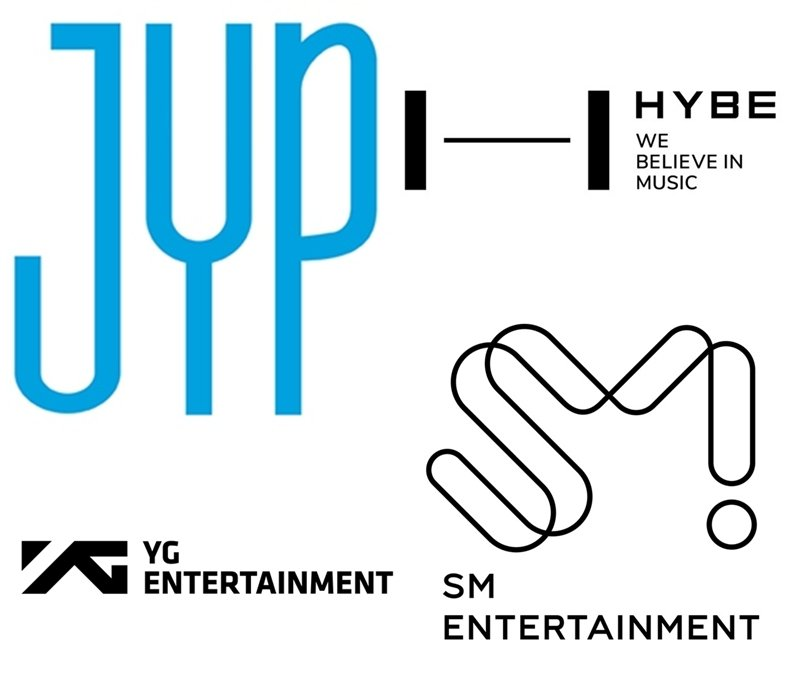

중국 베이징이나 상하이에서 K팝 그룹의 단독 콘서트를 다시 볼 수 있을까요? 18일 한중 FTA 서비스·투자 후속협상이 사실상 타결되면서 '한한령이 풀린다'는 말이 하루 사이 쏟아졌어요.
결론부터 말하면 합의 내용에 K팝 공연은 직접 들어 있지 않아요. 넓어진 건 영화·게임 심사와 드라마·예능 공동제작 쪽이에요.
▶ 영상 1 자리
합의에 들어간 것
가장 큰 변화는 '최혜국 대우'예요. 영화와 게임 같은 일부 콘텐츠에서 한국이라는 이유로 다른 나라보다 불리한 조건을 받지 않게 되고, 사전 심사에서도 국적을 따지지 않기로 했어요.
공동제작 범위도 넓어졌어요. 지금까지는 영화만 대상이었는데 드라마·애니메이션·예능 등으로 늘었어요. 한국 제작사가 중국과 함께 드라마나 예능을 만드는 길이 제도로 열린 셈이에요.
소식이 나온 18일과 다음 날 19일, SM·JYP·하이브 등 엔터 기업 주가가 이틀 연속 올랐어요.
📷 사진 1 자리
▲ JYP·하이브·YG·SM 엔터테인먼트 로고 · 사진=SM 제공
정작 빠진 것, 본토 콘서트
K팝 업계가 가장 바라는 건 중국 본토 단독 콘서트예요. 그런데 이를 허용한다는 구체적인 합의는 확인되지 않았어요.
지금도 중국 본토에서 노래와 퍼포먼스를 하는 정식 콘서트는 열기 어려워요. 그래서 기획사들은 그동안 팬미팅 같은 행사를 홍콩·마카오에서 열어 왔어요. 합의만으로 이 구조가 바로 바뀌지는 않는다는 게 업계의 대체적인 시각이에요.
신중한 이유도 있어요. 한한령 해제 기대는 지난 몇 년 동안 여러 번 나왔지만 그때마다 실제 변화로 이어지지 않았어요.
▶ 영상 2 자리
10년 전 무엇이 막혔나
한한령은 2016년 한국의 사드 배치 결정 뒤 시작됐어요. 같은 해 KBS 드라마 '태양의 후예'가 한국과 중국에서 동시에 방영돼 송중기가 '대륙의 남편'으로 불릴 만큼 인기를 끌던 때였어요.
그 뒤 한국 가수와 배우의 중국 현지 활동에 사실상 제동이 걸렸어요. 대규모 K팝 콘서트도 이때부터 막혔고요.
실제로 풀렸는지 확인하는 법
합의가 효력을 가지려면 협정이 정식으로 발효돼야 하고, 중국 안에서 콘텐츠별 심사와 허가도 거쳐야 해요. 공연이라면 공연 허가와 비자, 지역별 행정 심사까지 넘어야 하고요.
그러니 '한한령 해제'를 실감할 신호는 두 가지예요. 협정의 정식 발효 날짜, 그리고 중국 당국이 한국 가수의 본토 공연을 실제로 승인한 첫 사례예요.
이번 합의는 무대보다 제작 쪽 문을 먼저 연 것으로 보여요. 당장은 콘서트 소식보다 한중 공동제작 드라마·예능 발표가 나오는지를 먼저 지켜보는 게 맞을 듯해요.
이번 합의만으로 K팝 중국 본토 콘서트가 열린다고 보기는 어려워요. 다음으로 볼 것은 한중 FTA 후속협상의 정식 발효 일정이에요.
함께 보면 좋은 이슈
